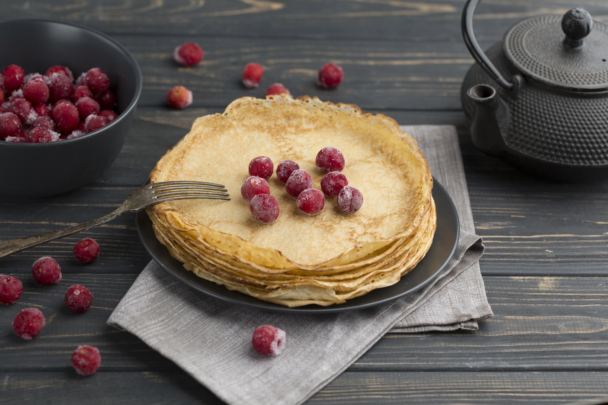

Balkan Pancaces

Description
This is the ORIGINAL pancace recipe and it's a stample in every Balkan and most of the eastern european cuisine!
Not to be mistaken for American PAncaces!!! These are not even close...
Ingedients
Steps
- Put 3 eggs in a large container
- Add a spoon of sugar
- Add the flour
- Mix until it has a thick creamy texture
- Add milk until the mass gets thiner
- Now repeat the previus two steps until you get a nice thin mass that you will pour int a hot pan and make palacinke.